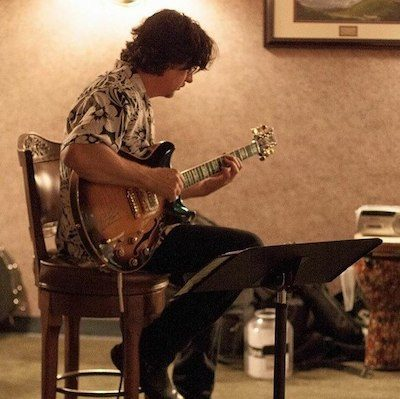

Guitar · Bass · Mandolin · Ukulele
Mike Freeland
Co-founder of Music Lessons Central. Mike started teaching out of his family's home after just three years of lessons, and today he covers every style from rock to classical.
About Mike
Mike started playing guitar at 15. “I wanted a motorcycle but got a guitar instead,” he says. “Little did my folks know what they had started.” Lessons were key to learning as quickly as he could, and after three years with various teachers he began teaching others out of his family's home.
After Valley College, Mike taught at Lier's Music in San Bernardino, then attended Musicians Institute in Hollywood, where he graduated in the top 20 of more than 800 students in his class.
In 1997 Mike and David Bown opened Music Lessons Central on Hospitality Lane in San Bernardino. The school moved to its current Redlands studio in December 2009.
“I have improved 2X as fast with him as my teacher because he uses technology, encourages me to write and record music, and he has the most awesome band room!”
“Mike has a lifetime of experience and knowledge enabling him to help me to realize a desire I've had all my life to express myself musically.”